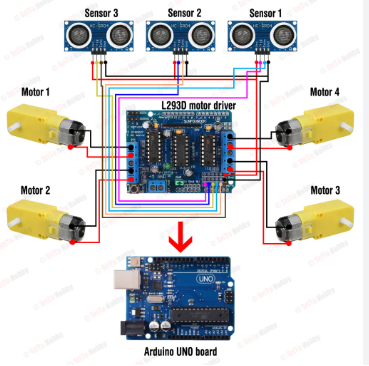

Hello! My name is Khadija Asad and I am an ELECTRONICS AND COMPUTING 1st semester student. For my first physics lab project i colaborated with my group mates and made an obstacle avoiding robot. This project helped me learn about sensors, circuits, motors, and basic robotics. I really enjoyed working on it because it gave me practical experience with technology and problem solving. and i look forward to making many new projects in future.
The obstacle avoiding car uses an ultrasonic sensor to detect objects in front of it. When the sensor detects an obstacle, the car automatically changes its direction to avoid crashing. The project uses simple programming and electronic components to control the movement of the car.

You can learn more about obstacle avoiding robots by visiting:
Visit Arduino Official Website